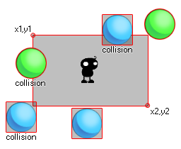

collision_rectangle( x1, y1, x2, y2, obj, prec, notme );
| Argument | Description |
|---|---|
| x1 | The x coordinate of the left side of the rectangle to check. |
| y1 | The y coordinate of the top side of the rectangle to check. |
| x2 | The x coordinate of the right side of the rectangle to check. |
| y2 | The y coordinate of the bottom side of the rectangle to check. |
| obj | The object to check for instance collisions. |
| prec | Whether the check is based on pixel-perfect collisions (true = slow) or its bounding box in general (false = fast). |
| notme | Whether the calling instance, if relevant, should be excluded (true) or not (false). |
Returns: Instance id or noone
Collision_rectangle uses the first four arguments (x1,y1,x2,y2)
to define an area within the current room and then checks to see if
any object that is defined by the "obj" argument is in
collision with that area. This collision can be checked as precise
or not, and you may also choose to check for the instance running
the code itself or not. Consider this image:

Here, the instance in the middle is using a collision rectangle
to check for ball objects. Now, the blue ones do not have a
precise bounding box and as you can see, even if the sprite is not
actually touching the rectangle, the collision will still happen
(even if you set the precise option in the function to true) as the
bounding box of that sprite over-laps the collision_rectangle. On
the other hand, the green balls will only be considered in
collision if the actual sprite over-laps the rectangle. Remember,
for precise collisions to be considered both the object
sprite and the collision function must have precise marked as on.
It should also be noted that the return value of the function can
be the id of any one of the instances considered to be in
collision.
var inst;
inst = collision_rectangle(50, 50, 200, 100, obj_Ball, false,
true);
if inst != noone
{
with (inst) instance_destroy();
}
This short code uses collision_rectangle check an area in the room from 50x, 50y (top left of the rectangle) to 200x, 200y (bottom right of the rectangle) for an instance of an object called "obj_ball". It stores the return value in a temporary variable which is then checked to see if that value is an instance id, or the keyword noone. If it is not noone then it uses the stored instance id to destroy the object.